Gwiazdy, moda i uroda - wywiady prze.tv prosto ze ścianki
Newsy z show-biznesu, relacje z premier i rozmowy z gwiazdami, które nagrywamy z naszym różowym mikrofonem.
TEDE prosto z premiery filmu „TEDE. FOREVER RAP” wprost o utworze Malika i Wieniawy
Najnowsze
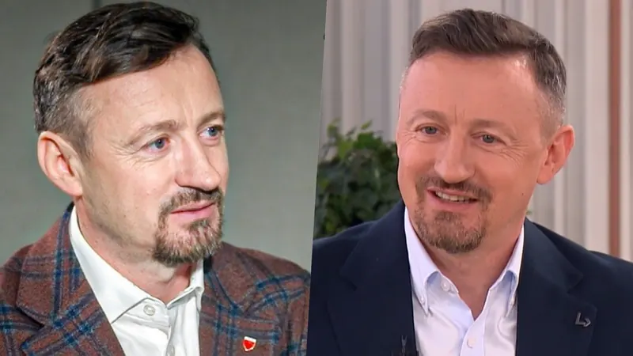
Adam Małysz OSTRO o Rosjanach. Nie powinni wjeżdżać do Polski?
Powrót rosyjskich sportowców do międzynarodowej rywalizacji wciąż budzi emocje. Głos zabrał Adam Małysz i nie pozostawił wątpliwości, co sądzi o znoszeniu ograniczeń.
Wielkie poruszenie wokół Fabijańskiego. Ma wystąpić w hicie Polsatu [KULISY]
Katarzyna Warnke ODCINA SIĘ od przyjaźni z Kuną? Padły wymowne słowa
Maciej Kurzajewski WRACA do TVP? „Najpiękniejszy rozdział mojego życia”
Edyta Herbuś WBIJA SZPILĘ Kaczorowskiej. Nie gryzła się w język
prze.tv
Rozmowy z gwiazdami nagrywane na premierach, galach i w kulisach programów.
TEDE prosto z premiery filmu „TEDE. FOREVER RAP” wprost o utworze Malika i Wieniawy
Joanna Kurowska wraca do AFERY Dagmary Kaźmierskiej. „NIKCZEMNE rzeczy”, a „taka MIŁA”?
Patryk VEGA „dobrze PŁACI” i robi film o aferze ZONDACRYPTO? „Były większe PRZEKRĘTY”
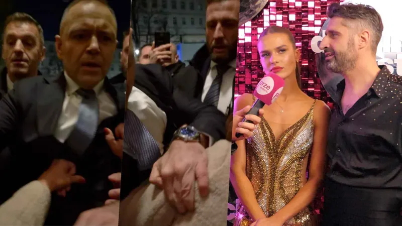
DOŚĆ! Piotra GUMA Gumulca WYRZUCĄ z „Tańca z Gwiazdami” przez słowa o Trybunale?
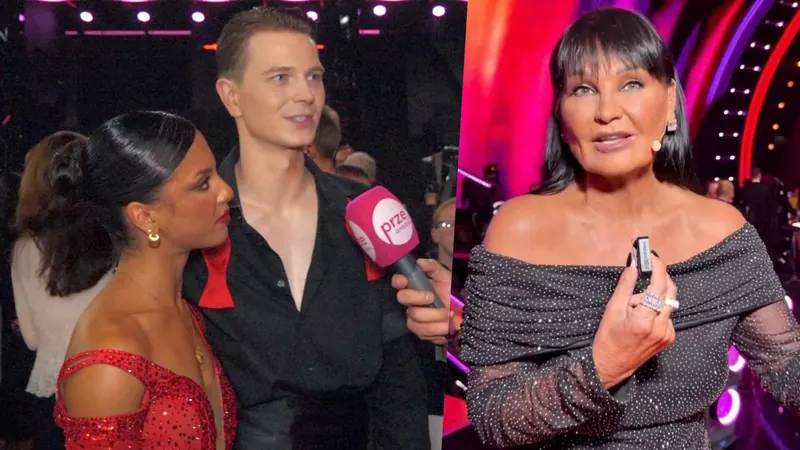
Dominik Rupiński WPROST o ocenie Iwony PAVLOVIĆ! Czy WYGRA „Taniec z Gwiazdami”?
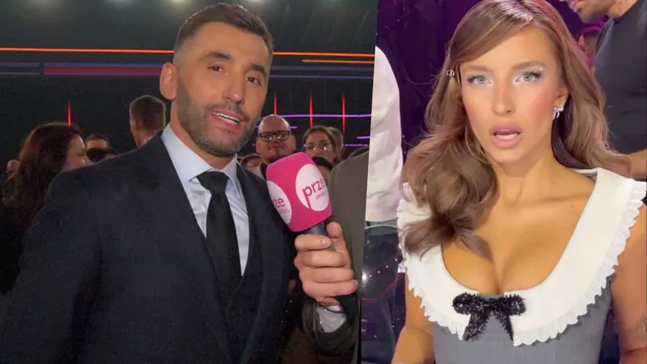
Rafał Maserak POUCZA Julię WIENIAWĘ w „Tańcu z Gwiazdami”: Nie powinna przepraszać?
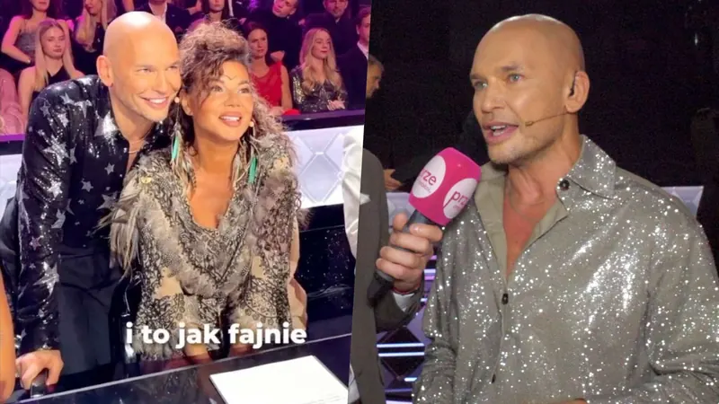
Tomasz Wygoda OSTRO podsumował Edytę GÓRNIAK
Showbiz i telewizja
Poważne oskarżenia pod adresem Margarety. Management przerwał milczenie
TelewizjaKto zastąpi Julię Wieniawę w „Mam Talent”? Stacja podjęła decyzję [KULISY]
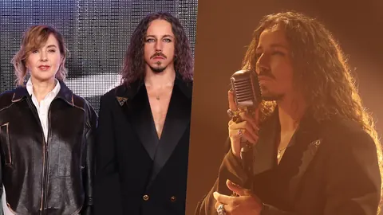
Szpak OSTRZEGAŁ Bartosiewicz przed „The Voice of Poland”. Zaskoczeni?
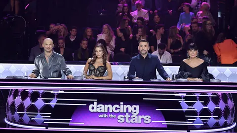
Oto NOWY uczestnik „Tańca z Gwiazdami”? Nazwisko wyciekło do sieci
Moda i uroda
Premiery, ścianki i stylizacje gwiazd, a obok kosmetyki i perfumy, które warto znać.
Halloween 2026: Maffashion jako Miszczak, Bagi jako Skolim. Kto wypadł najlepiej?
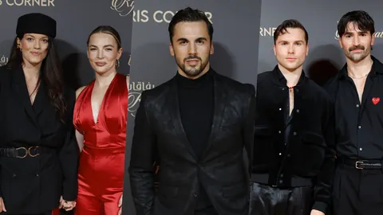
Gwiazdy na premierze RIFAAQAT UME. Zobacz, kto pojawił się na ściance [FOTO]
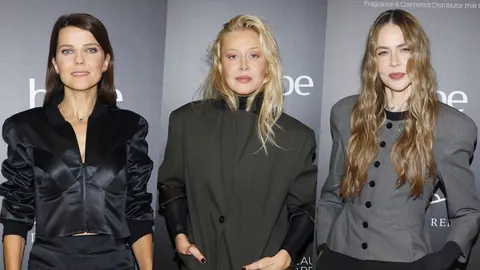
Tłum gwiazd na LuNiche Warsaw Experience: Jabłczyńska, Sablewska, Warnke [RELACJA]
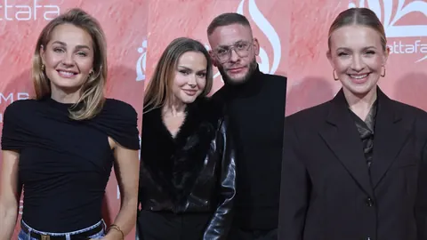
Gwiazdy na premierze KHAMRAH MIRA by Lattafa: Socha, Kurdej-Szatan, Ciupa [FOTO]
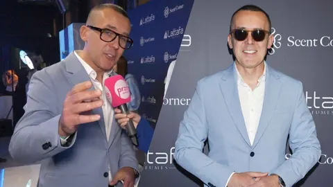
Maciej Kurzajewski zachwycony arabskimi perfumami z Dubaju: „Jeden z lepszych pomysłów”
Współpraca: Twoja marka obok gwiazd
Przygotujemy kampanię dopasowaną do marki, produktu albo wydarzenia. Jeśli organizujesz premierę, otwarcie lub urodziny marki, zaprosimy na nie gwiazdy i nagramy relację.
- Kampanie promujące markę, produkt, usługę lub wydarzenie
- Artykuły, wywiady eksperckie i relacje wideo prze.tv
- Promocja w mediach społecznościowych, także sponsorowana
- Konkursy oraz testy produktów i usług
- Banery reklamowe w eksponowanych miejscach portalu
- Celebrity PR: gwiazdy na Twoim wydarzeniu
Zaufały nam m.in.: Vianek, Sylveco, Lab One, Carinii, Joanna Kruczek, Wydawnictwo Czarna Owca, Radio Kolor, Orange, Multikino.
kontakt@przeambitni.pl